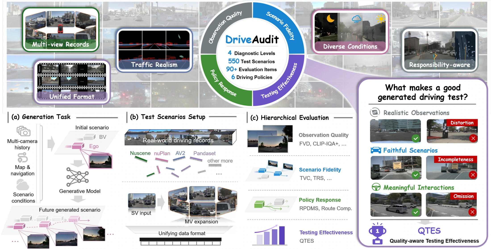

Observation quality
CLIP-IQA+
Compare the detail and visible artifacts in matched camera views.
DINO-T
Watch whether the appearance stays consistent as the scene moves.
Beyond Visual Realism
Benchmarking Generated Driving Scenarios as Policy Tests
Explore renderer pairs, compare six ego policies, and see how generators rank by QTES.
Compare the detail and visible artifacts in matched camera views.
Watch whether the appearance stays consistent as the scene moves.
Compare scenes selected for their cross-view geometric agreement.
Follow the traffic through the six views and compare consistency between trajectories and video.
Six ego policies, four distinct cases each. Compare two renderers on the same CAT-K scene with the policy held fixed.
| Metric | OpenDWM | HorizonDrive |
|---|---|---|
| RPDMS | 1.000 | 0.977 |
| Ego progress | 1.000 | 1.000 |
| Drivable-area compliance | 1.000 | 0.986 |
| TTC score | 1.000 | 1.000 |
| Comfort | 1.000 | 0.947 |
| Ego policy | Scene | Comparison renderer | OpenDWM | Comparison | Matched windows |
|---|---|---|---|---|---|
| UniAD | nuScenes adv_case_0005 | HorizonDrive | 1.000 | 0.977 | 57 |
| UniAD | nuScenes adv_case_0004 | DreamForge | 0.900 | 0.956 | 52 |
| UniAD | nuScenes adv_case_0006 | MagicDrive-V2 | 0.265 | 0.220 | 44 |
| UniAD | nuPlan adv_case_0002 | DreamForge | 0.648 | 0.615 | 44 |
| VAD | nuScenes adv_case_0007 | HorizonDrive | 0.781 | 0.817 | 56 |
| VAD | nuScenes adv_case_0008 | MagicDrive-V2 | 0.392 | 0.331 | 40 |
| VAD | nuScenes adv_case_0009 | DreamForge | 0.995 | 0.995 | 57 |
| VAD | nuPlan adv_case_0003 | HorizonDrive | 0.018 | 0.019 | 44 |
| DrivoR | nuScenes adv_case_0010 | MagicDrive-V2 | 0.938 | 0.956 | 56 |
| DrivoR | nuScenes adv_case_0011 | DreamForge | 0.938 | 0.919 | 57 |
| DrivoR | nuScenes adv_case_0013 | HorizonDrive | 0.966 | 0.970 | 56 |
| DrivoR | nuPlan adv_case_0004 | MagicDrive-V2 | 0.563 | 0.553 | 44 |
| SparseDriveV2 | nuScenes adv_case_0014 | DreamForge | 0.892 | 0.862 | 56 |
| SparseDriveV2 | nuScenes adv_case_0017 | HorizonDrive | 0.965 | 0.972 | 57 |
| SparseDriveV2 | nuScenes adv_case_0018 | MagicDrive-V2 | 0.966 | 0.967 | 57 |
| SparseDriveV2 | nuPlan adv_case_0005 | DreamForge | 0.943 | 0.933 | 44 |
| DiffusionDriveV2 | nuScenes adv_case_0020 | HorizonDrive | 0.833 | 0.866 | 57 |
| DiffusionDriveV2 | nuScenes adv_case_0021 | MagicDrive-V2 | 0.837 | 0.835 | 57 |
| DiffusionDriveV2 | nuScenes adv_case_0023 | DreamForge | 0.883 | 0.868 | 57 |
| DiffusionDriveV2 | nuPlan adv_case_0006 | HorizonDrive | 0.244 | 0.370 | 44 |
| GoalFlow | nuScenes adv_case_0024 | MagicDrive-V2 | 0.728 | 0.778 | 56 |
| GoalFlow | nuScenes adv_case_0025 | DreamForge | 0.932 | 0.928 | 48 |
| GoalFlow | nuScenes adv_case_0026 | HorizonDrive | 0.900 | 0.904 | 56 |
| GoalFlow | nuPlan adv_case_0007 | MagicDrive-V2 | 0.772 | 0.716 | 44 |
| Ego policy | Collision-window rate ↓ | Plan TTC ↑ | Drivable-area compliance ↑ | Progress ↑ | Comfort ↑ |
|---|---|---|---|---|---|
| UniAD | 0.302 | 2.598 | 0.952 | 0.960 | 0.633 |
| VAD | 0.337 | 2.632 | 0.950 | 0.941 | 1.000 |
| DrivoR | 0.026 | 2.967 | 0.999 | 0.868 | 0.960 |
| SparseDriveV2 | 0.016 | 2.960 | 0.999 | 0.874 | 0.998 |
| DiffusionDriveV2 | 0.078 | 2.947 | 0.992 | 0.831 | 0.465 |
| GoalFlow | 0.051 | 2.954 | 0.991 | 0.869 | 0.602 |
The QTES leaderboard for seven renderers on 80 paired scenes with CAT-K traffic (Table 2).
| Rank | Renderer | TVC ↑ | RPDMS ↑ | Route completion ↑ | QTES ↑ |
|---|---|---|---|---|---|
| 1 | OpenDWM | 0.543 | 0.724 | 0.878 | 44.079 |
| 2 | DreamForge | 0.495 | 0.729 | 0.881 | 41.311 |
| 3 | HorizonDrive | 0.519 | 0.725 | 0.880 | 40.108 |
| 4 | MagicDrive-V2 | 0.447 | 0.718 | 0.870 | 39.509 |
| 5 | Panacea | 0.374 | 0.717 | 0.881 | 39.146 |
| 6 | BaseDreamer | 0.410 | 0.721 | 0.880 | 38.522 |
| 7 | MagicDrive | 0.363 | 0.670 | 0.855 | 37.282 |
Inspect examples of how quality retention and policy response contribute to the 80-scene score.
TE 0.563 / 0.560 / B 0.901 / 0.711
CAT-K, OpenDWM and DrivoR. Each clip covers 20 verified decisions, with 0.5 seconds of each plan executed before the next render. The BEV shows tracked vehicles in blue and the ego footprint in green.
550 scenario histories. Seven renderers. Six driving policies.
DriveAudit compares policy decisions on paired recorded and generated sequences.

Of 550 histories, 500 come from native multi-camera recordings: 250 nuScenes, 100 nuPlan, 75 Argoverse 2 and 75 PandaSet. The remaining 50 come from Nexar. Each Nexar history provides one recorded camera view; the other five are synthesized.

On 20 matched scenarios, closed-loop RPDMS falls for all seven renderers. DreamForge and MagicDrive-V2 retain the top two QTES ranks.
| Renderer | RPDMS ↑ | QTES ↑ | ||
|---|---|---|---|---|
| Replay | Closed loop | Replay | Closed loop | |
| MagicDrive-V2 | 0.955 | 0.707 | 42.405 | 53.861 |
| OpenDWM | 0.949 | 0.715 | 41.236 | 50.260 |
| Panacea | 0.951 | 0.700 | 37.464 | 47.222 |
| DreamForge | 0.940 | 0.671 | 43.954 | 54.545 |
| BaseDreamer | 0.953 | 0.693 | 38.254 | 52.532 |
| HorizonDrive | 0.961 | 0.700 | 37.668 | 49.421 |
| MagicDrive | 0.954 | 0.692 | 33.285 | 45.999 |
Generate traffic trajectories, render future camera views, then evaluate driving policies on generated and recorded observations.